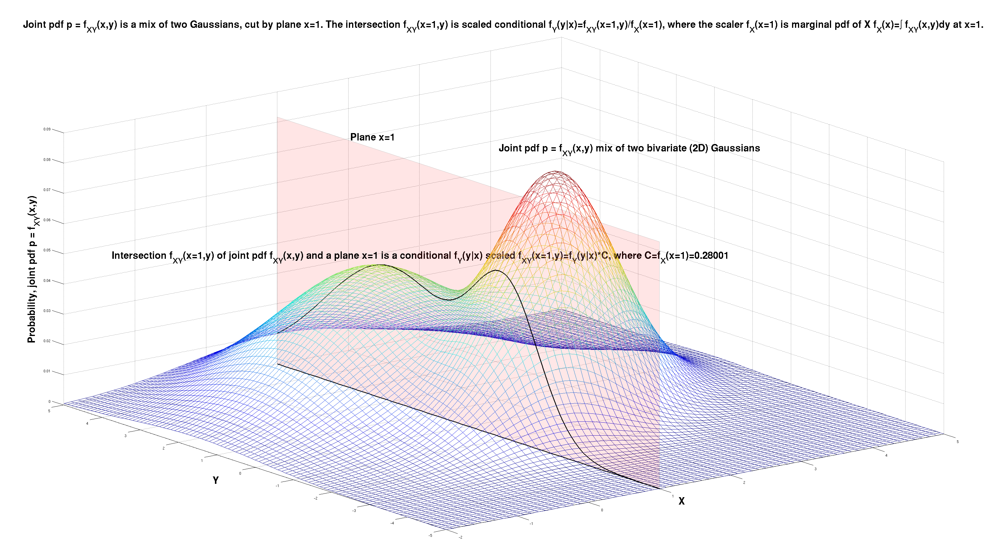

Knowing - what do I mean when I say I know something
I was told "the joint probability density function between two variables X and Y captures all there is ever to be known about the relation between them" 25 years ago (¡Hola! Miguel :-)), and it's been a blessing and a curse. Blessing - yeah joint pdf \( f_{X,Y}(x,y) \) does capture everything. Curse - often I read an article and think of the author "wish someone told you too".
Example below illustrates the point on the example of a joint pdf \( p = f_{X,Y}(x,y) \) that is a mix of two Gaussians in 2D space \( (x,y) \). Then we observe the variable \( X \) and the observations is \( x=1 \). That is equivalent to the joint pdf being cut by the plane \( x=1 \).
The intersection of the joint pdf \( p = f_{X,Y}(x,y) \) and the plane \( x=1 \) is \( f_{X,Y}(x=1,y) \) and is the best description of how the model \( f_{X,Y})(x,y) \) is affected by the observation \( x=1 \). That intersection \( f_{X,Y}(x=1,y) \) is outlined below. It is a function that is a scaled conditional \( f_{X,Y}(x=1,y) = f_Y(y|x)f_X(x=1) \), where the the conditional pdf is \( f_Y(y|x) \), and the scaler \( f_X(x=1) \) is the marginal pdf \( f_X(x) \) of \( X \) at point \( x=1 \).
The marginal pdf \( f_X(x) \) is computed from the joint pdf \( f_{X,Y}(x,y) \) by marginalization, by integrating out \( Y \) as \( f_X(x) = \int f_{X,Y}(x,y)\,dy \) and then plugging in \( x=1 \).
Joint marginal conditional pdf 1 of 3. (click to zoom) 
Conditional pdf is ratio of joint (at point) and marginal 2 of 3. (click to zoom)

Marginal pdf is derived from the joint pdf 3 of 3. (click to zoom)

TODO TBD
--
LJ HPD Sun 20 Oct 07:31:04 BST 2024